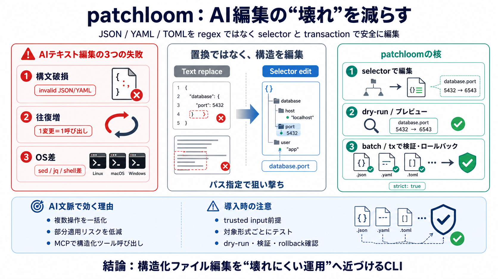

Failure i
構文破損（invalid JSON/YAML）

patchloomは、AIコーディングエージェントがファイルを編集する際の失敗パターンを、selector-basedセレクタ指定とtransactionトランザクションで抑えるためのCLIです。
AIが「テキスト編集」をすると、(1) 設定ファイルの破損、(2) LLM往復（ラウンドトリップ）増大、(3) OS差による運用複雑化が起きやすくなります。
正規表現の置換は、コメント・インデント・順序に依存しがちです。patchloomはパーサベースで「構造」を保った編集へ寄せます。
patchloomは、構造化ファイルを「セレクタ指定で変更」し、dry-runプレビュー、検証、ロールバック付きで複数ファイルを安全に適用します。
設定変更が複数ファイルにまたがる場合、patchloomはbatch / txで編集を1回にまとめ、部分適用リスクを下げます。
txでは、フォーマット／バリデーション失敗時にロールバックする考え方が示されています。中途で壊れる状態を避けます。
patchloomはLinux/macOS/Windowsで同一のCLI体験・オプション体系を狙い、依存ツール（sed/jq/grep等）を前提にしません。
MCP対応により、ホストシェルの文字列組み立てに依存せず、エージェントが構造化された呼び出しとしてpatchloomを利用できます。
単一ファイルの単純編集ならネイティブが速い場合がありますが、AI文脈ではbatch/txが往復回数を減らし、体感とコストを改善します。
patchloomは「正規表現ではなくセレクタ」「trusted input前提のtx実行方針」「汎用filesystem MCPではない」という整理が重要です。
patchloomの“安全”は条件付きです。特にtxの実行方針と、保証範囲（失敗時挙動・AST操作の深さ等）の確認が必要になります。
patchloomは「構造化ファイルをセレクタで編集」「batch/txで一括・ロールバック」「MCPで構造化ツール呼び出しへ寄せる」ことで、AIコーディングの部分失敗と文脈ずれを体系的に抑える設計です。
導入は、txのtrusted input方針を満たしつつ、対象（JSON/YAML/TOML）とモードごとにdry-run・検証・ロールバックの挙動をテストで確認するのが最短です。
No references found